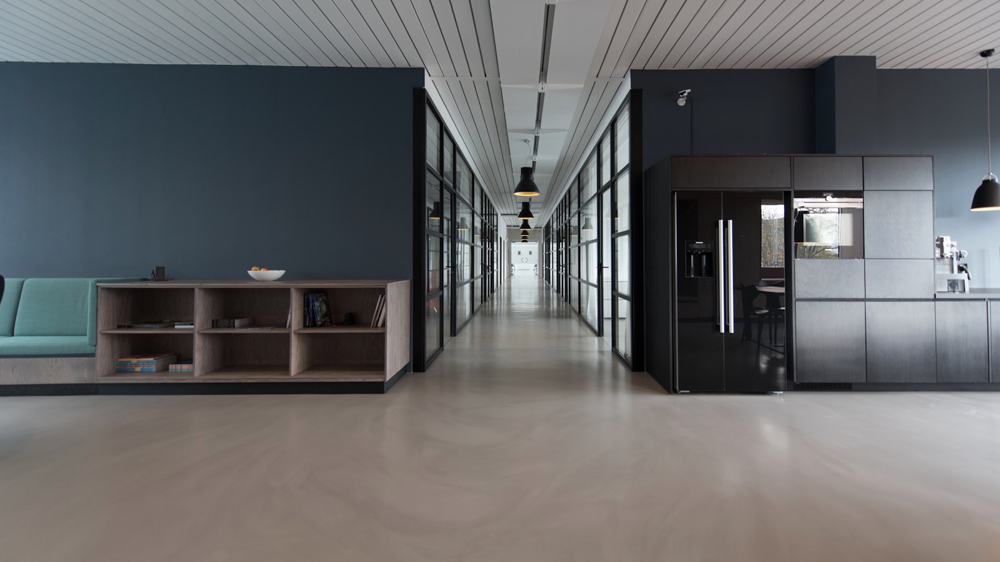

사설 · Editorial
SK하이닉스가 삼성전자를 추월한 그 순간, 우리는 무엇을 보았나
사이클의 정점인가, 패러다임의 전환인가. 둘은 처음에는 구분되지 않는다.
편집국 사설과 외부 기고자의 글. 한국 자본시장에 대한 본지의 시각, 그리고 다른 시각.
사이클의 정점인가, 패러다임의 전환인가. 둘은 처음에는 구분되지 않는다.

외국인이 다시 돌아온 진짜 이유는 무엇인가.

상장폐지 기준 강화와 자본시장 개혁이 코스닥에 대한 외국인 시선을 바꿔놓기 시작했다.

메모리 두 종목으로는 10,000에 닿을 수 없다.

한은의 도구만으로 만들어지지 않는다.

미국 상장 한국 기업의 거버넌스 질문.